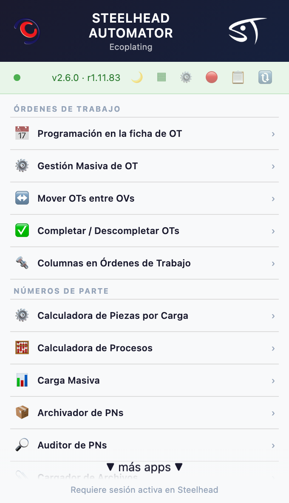
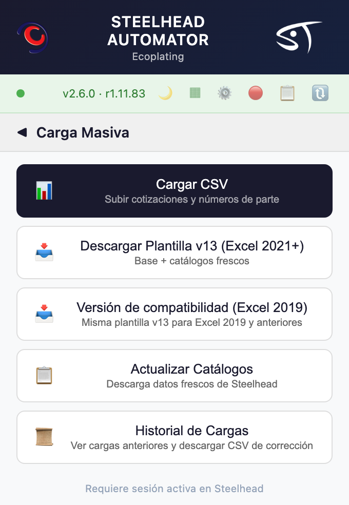
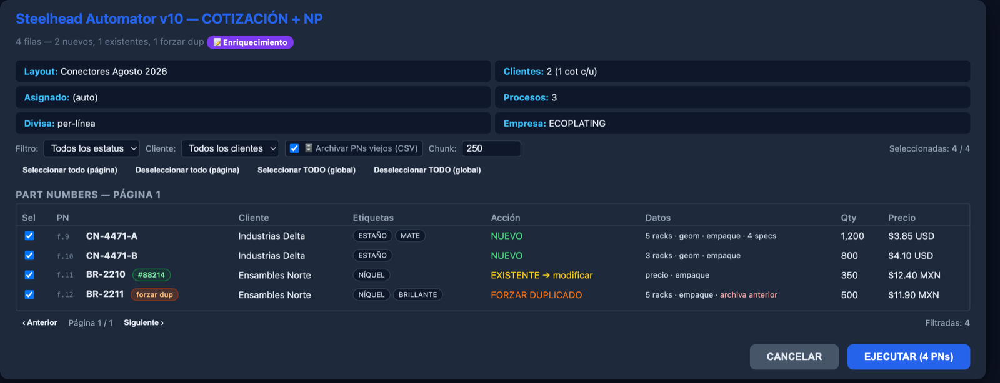
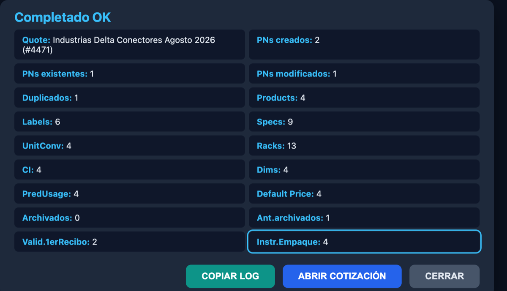

Carga masiva · Guía de uso
Cómo llenarla, columna por columna, desde que la bajas hasta que Steelhead te devuelve el resumen de la carga. Con las dos novedades de esta versión: cinco tipos de rack por número de parte e Instrucciones de Empaque.
Documento vivo
Refleja la plantilla Plantilla_CargaMasiva_v13.xlsm tal como está publicada hoy — {{DATO:nColsVisibles}} columnas, de la A a la {{DATO:ultimaColumna}}. Los encabezados, los tipos de dato y los valores iniciales que ves aquí se leyeron del archivo real, no se transcribieron. Si abres tu plantilla y el último encabezado no es Tiempo de Entrega en la columna {{DATO:ultimaColumna}}, no estás en la v13.
En corto
La v13 agrega tres pares de rack (ahora son cinco) y una columna nueva, Instrucciones de Empaque. Las dos entran después del bloque de racks, así que todo lo que venía detrás se recorrió. Por eso no se puede copiar y pegar un renglón de la v12 a la v13 columna por columna: hay que pegar por bloques o volver a capturar. La v12 sigue funcionando; si la usas, se carga como v12 y nada se rompe.
Dos cambios, los dos en la mitad de la hoja. Eso es justo lo que los hace notorios: no se agregaron al final.
| v12 | v13 | |
|---|---|---|
Columnas de la hoja Upload | 60 | {{DATO:nColsVisibles}} |
| Pares de rack por número de parte | 2 | 5 |
| Instrucciones de Empaque | no existe | columna BH |
| Tipo de Geometría | AM | AS |
| Última columna | BH | BO |
La v12 no se rompe
Un archivo exportado con la plantilla anterior se sigue cargando igual: el sistema reconoce con cuál de las dos se hizo y lo interpreta en consecuencia. No hay prisa por migrar los archivos que ya tengas armados. Lo que no funciona es mezclar: pegar renglones de una v12 dentro de una v13 corre los datos seis columnas.
Porque las piezas que caben en una carga dependen de la línea. Un mismo número de parte puede ir de cuatro en cuatro en una línea y de una en una en otra. Con dos pares solo cabían dos de esas combinaciones; con cinco se puede describir el número de parte completo, sin tener que elegir cuáles dos documentar.
Seis pasos. Los tres primeros son de preparación y solo se hacen una vez por archivo; los tres últimos son la carga en sí.
Siempre desde el menú de la extensión, aunque ya tengas una copia guardada. Es la única forma de asegurarte de que trabajas con la versión publicada.
Abre Steelhead, haz clic en el icono de la extensión y entra a Carga Masiva. En la categoría Números de Parte.


| Botón | Cuándo usarlo |
|---|---|
| Descargar Plantilla v13 (Excel 2021+) | Excel 2021, Microsoft 365 o Excel para Mac reciente. Es la que aprovecha las fórmulas de matriz dinámica de los catálogos. |
| Versión de compatibilidad (Excel 2019) | Excel 2019 o anterior. Misma plantilla y mismas columnas; cambia solo cómo se resuelven internamente las listas. |
Si no sabes qué versión de Excel tienes
Prueba primero con la de 2021+. Si al abrirla las listas desplegables salen vacías o ves errores #¡NOMBRE? en las celdas, cierra sin guardar y baja la versión de compatibilidad.
Al dar clic en cualquiera de las dos, la extensión también genera los catálogos frescos —clientes, procesos, productos, etiquetas, specs, racks, líneas, usuarios— y te avisa cuando terminó. Ese archivo es el que vas a usar en el paso siguiente.
Los desplegables de la plantilla no salen de Steelhead en vivo: salen de una hoja interna llamada Listas. Refrescar es copiar los catálogos recién bajados a esa hoja.
Si no bajaste la plantilla en este momento, usa el botón Actualizar Catálogos del menú. Descarga un archivo con los catálogos al día.
RefrescarListasCon la plantilla abierta, corre la macro Refrescar Listas. Te va a pedir que selecciones el archivo de catálogos que acabas de bajar. Al terminar te dice cuántos registros cargó de cada catálogo.
Sin este paso los desplegables mienten
Una plantilla sin refrescar trae los catálogos del día en que se armó. Si desde entonces se dio de alta un cliente, un proceso o un tipo de rack, no va a aparecer en la lista — y si lo escribes a mano, el renglón se carga sin ese dato y aparece en el reporte de errores. Refresca al empezar cada archivo, no una vez al mes.
La zona de arriba de la hoja, antes de los encabezados de columna. Define qué tipo de carga vas a hacer y, si es una cotización, cómo se va a llamar.
| Campo | Dónde | Qué poner |
|---|---|---|
| Modo | arriba a la derecha del título | COTIZACIÓN+NP o SOLO_PN. Es lo primero que hay que decidir. |
| Empresa Emisora | junto a la etiqueta | ECOPLATING o PROQUIPA. |
| Válida Hasta (días) | debajo de la anterior | Vigencia de la cotización. Viene en 30. Solo aplica en modo cotización. |
| Nombre Cotización/Layout | al centro | Obligatorio en modo cotización. Es el nombre con el que vas a encontrar la cotización después. |
| Asignado | debajo del nombre | El vendedor. Si lo dejas en blanco, el sistema asigna automáticamente. |
| Notas Externas | a la derecha | Texto que ve el cliente en la cotización. |
| Notas Internas | a la derecha | Texto de uso interno. |
| Modo | Qué hace | Cuándo |
|---|---|---|
COTIZACIÓN+NP | Crea la cotización y los números de parte, con precios y productos. | Cuando el trabajo empieza por una cotización al cliente. |
SOLO_PN | Crea o modifica números de parte, sin tocar cotizaciones. | Altas de catálogo, correcciones masivas, enriquecer datos de partes que ya existen. |
Varios clientes en un mismo archivo: sí se puede
En modo COTIZACIÓN+NP puedes mezclar renglones de distintos clientes. Se crea una cotización por cada uno, y cada una se nombra «{Cliente} {Layout}» — el Nombre Cotización/Layout del encabezado es la parte común. Al exportar, la macro te dice cuántas cotizaciones va a producir y te pide confirmar: es un aviso para que un cliente colado por error no pase inadvertido, no un impedimento.
Las etiquetas del encabezado no se tocan
La macro busca cada campo por su etiqueta (“Empresa Emisora:”, “Asignado:”, “Notas Internas:”…), no por la celda en la que está. Es lo que hace que el encabezado siga funcionando aunque se muevan cosas — pero también significa que si renombras o borras una etiqueta, ese campo deja de leerse. Cambia los valores, no los rótulos.
Rigen toda la hoja y explican la mayoría de los sustos. Vale la pena leerlas una vez con calma.
| Lo que escribes | Lo que pasa |
|---|---|
| Celda vacía o (seleccione) sin tocar | No se toca nada. El número de parte conserva el valor que ya tenía en Steelhead. |
Un guión - | Se borra el dato. Se manda vacío a Steelhead. |
V / F | En las columnas de sí/no: V activa, F desactiva. |
Vacío y guión no son lo mismo
Es la distinción más cara de la plantilla. Dejar en blanco conserva; poner un guión borra. Si dudas, deja en blanco: no tocar nunca hace daño, borrar sí.
Y un detalle que ahorra confusiones: los renglones sin número de parte no se tocan ni se validan. Puedes dejar filas a medio llenar mientras trabajas; mientras no tengan número de parte, para el sistema no existen.
Los datos empiezan en la fila 9. La fila 7 trae los encabezados y la 8 te dice, en cada columna, qué tipo de dato espera. Recorremos la hoja de izquierda a derecha, en los mismos bloques en que está agrupada.
Estatus permite dejar el número de parte activo o archivado, con o sin validación de primer recibo.Es el bloque que más creció en esta versión. Tiene su propia sección, más abajo.
Cinco pares de columnas, uno por combinación de rack y línea. Cada par contesta dos preguntas: en qué se cuelga y cuántas piezas caben.
Se llenan de izquierda a derecha
Usa el par 1, luego el 2, y así. Dejar huecos en medio funciona, pero hace más difícil revisar el archivo de un vistazo. Los pares vacíos simplemente no se cargan.
Cinco racks multiplican el trabajo del servidor
Cada par lleno es una escritura más por número de parte. Pasar de dos a cinco puede multiplicar por dos y medio las escrituras de rack de la corrida. En cargas de miles de renglones eso se nota, y esta herramienta ya ha topado con los límites del servidor antes. Llena los que de verdad usas.
Un caso conocido
Si en el primer par pones un guión para borrar y a la vez llenas otro par, el guión no borra: se interpreta como el nombre de un rack y verás el error RackType "-" no encontrado. Para borrar racks, deja el guión solo, sin otros pares llenos.
La otra novedad. Se ve como una columna más, pero por dentro es distinta a todas las demás de la plantilla.
Todas las demás columnas escriben en el número de parte. Esta escribe en el cruce de número de parte × paso del proceso: es lo que en la ficha aparece como «Instrucciones del Número de Parte en “Preparando Embarque en Almacén”». Dicho de otro modo: no es una propiedad de la pieza, es una indicación para quien la empaca.
Hay otra descripción parecida, y esa es de toda la planta
Ese mismo paso del proceso tiene una segunda descripción, la global del paso, que hoy trae el aviso «No olvidar empacar conforme a requerimientos del cliente…» y que comparten todos los números de parte. La carga masiva no la toca: escribe únicamente la del número de parte. Si alguna vez ves que tu texto le apareció a piezas que no cargaste, no es esta columna.
| Celda | Efecto |
|---|---|
| Vacía | No toca nada. El número de parte conserva las instrucciones que ya tenga. |
- | Borra las instrucciones. |
| Con texto | Sustituye lo que hubiera por ese texto. |
Solo un guión solo borra. --, — o - ver anexo son texto normal.
El campo guarda el texto tal cual lo escribes, y Steelhead lo muestra con formato. Rodear una palabra con dos asteriscos la pone en negritas:
| Escribes en Excel | Se ve en Steelhead |
|---|---|
Empacar en bolsa **antiestática** | Empacar en bolsa antiestática |
**No apilar** más de 4 cajas | No apilar más de 4 cajas |
Al paso «Preparando Embarque en Almacén», que es donde se empaca. El paso se busca por nombre, no por número interno, porque los números internos cambian entre plantas: uno fijo funcionaría en Toluca y escribiría en el lugar equivocado —o en ninguno— en Monterrey.
El nombre tiene que coincidir exacto y encontrar un solo paso. No es un capricho: en la receta real conviven siete pasos que llevan la palabra «Embarque». Si no encuentra el paso, o encuentra varios, no adivina: reporta ese número de parte y sigue con los demás.
Una llamada por número de parte
A diferencia de casi todo lo demás, las instrucciones no se pueden agrupar: van de una en una. En una carga de varios miles de renglones con esta columna llena, es tráfico considerable. Si no cambian, deja la columna vacía.
La macro Limpiar Datos borra los renglones y devuelve los valores iniciales, conservando las fórmulas. Te pregunta hasta qué fila va a limpiar antes de hacerlo.
Reusar una plantilla sin limpiar es el error más silencioso
Si vuelves a usar un archivo de una carga anterior y no lo limpias, los datos viejos que queden en columnas que ya no estás mirando se vuelven a subir. No hay ninguna señal: la hoja se ve bien. Limpia siempre antes de capturar algo nuevo, o mejor, baja la plantilla otra vez.
La macro Exportar CSV revisa el archivo antes de escribir nada. Si algo no cuadra, no genera el archivo y te dice qué corregir:
| Te detiene si… | Qué hacer |
|---|---|
El modo no es COTIZACIÓN+NP ni SOLO_PN | Elige uno de los dos en el desplegable del encabezado. |
| Modo cotización sin Nombre Cotización/Layout | Escríbelo. En modo cotización es obligatorio. |
| Hay números de parte sin cliente | Te lista las primeras diez filas. Llena el cliente en cada una. |
Más de 2,000 renglones en SOLO_PN | Es una advertencia, no un bloqueo: te pregunta si quieres continuar en un solo archivo. |
| Hay varios clientes en modo cotización | También es aviso, no bloqueo: te dice cuántas cotizaciones va a crear y confirmas. |
Si todo está bien, te pide dónde guardar el .csv y al terminar te confirma el modo, cuántas columnas y cuántos renglones exportó, ordenados por cliente y número de parte.
El mensaje de confirmación dice “CSV v12 exportado”
Es una errata del texto del aviso, no un problema del archivo: la plantilla v13 exporta sus {{DATO:nColsVisibles}} columnas correctamente y así se cargan. Fíjate en el número de columnas que reporta el mensaje, no en el “v12”. Ya está reportado para corregirse.
Vuelve al menú de la extensión, entra a Carga Masiva y usa Cargar CSV. Nada se escribe todavía: primero se abre la vista previa.

El título del panel dice “v10”
Es el nombre interno de la herramienta, no la versión de tu plantilla: no significa que se haya leído como v10. La forma de confirmar qué se leyó es la columna Datos de cada renglón — si dice “5 racks” o “empaque”, la v13 se interpretó bien. También está reportado para corregirse.
Cuando estés conforme, EJECUTAR. Al terminar aparece el resumen:

Lee los dos contadores de números de parte juntos
Si PNs modificados sale menor que PNs existentes, el resumen lo marca en rojo: significa que algunos renglones no llegaron a escribirse. Ahí conviene abrir el detalle de errores antes de dar la carga por buena.
El botón Copiar log deja el registro completo en el portapapeles — es lo más útil que puedes mandar si algo salió mal. Y Historial de Cargas, en el menú, guarda las corridas anteriores y permite bajar un CSV de corrección con los renglones que fallaron.
| Lo que ves | Qué significa | Qué hacer |
|---|---|---|
| Los desplegables salen vacíos | Las listas no se han refrescado, o la plantilla es la de 2021+ en un Excel viejo | Corre Refrescar Listas. Si sigue igual, baja la versión de compatibilidad. |
| No se puede exportar: N líneas con PN sin Cliente | Faltan clientes en los renglones que te lista | Llénalos. El cliente es obligatorio en cada renglón con número de parte. |
RackType "-" no encontrado | Guión en el primer par de rack junto con otros pares llenos | Deja el guión solo si lo que quieres es borrar los racks. |
| Una etiqueta no se aplicó | Ese nombre de etiqueta no existe en el catálogo | Elígela del desplegable en vez de escribirla, o pide que se dé de alta. |
| Un número de parte no recibió instrucciones de empaque | Su receta no tiene el paso de embarque, o tiene más de uno con ese nombre | Revisa la receta de ese número de parte. El sistema prefiere no escribir a escribir en el paso equivocado. |
| La carga se detiene o va muy lenta | Demasiadas escrituras seguidas contra el servidor | Parte el archivo en tandas más chicas. Con muchos racks e instrucciones, tandas de unos cientos. |
| Datos que no capturaste aparecen en Steelhead | Se reusó una plantilla sin limpiar | Limpiar Datos antes de cada archivo nuevo. |
La hoja Ayuda de la plantilla está desactualizada
La pestaña Ayuda que viene dentro del archivo describe todavía el layout de la v10: menciona columnas y posiciones que ya no corresponden (racks en AP–AS, “Etiqueta 5”, 69 columnas). No la sigas para ubicar columnas. Este documento es el que refleja la v13. Ya está reportado.
No uses la copia que ya tienes en Descargas. Así compruebas el circuito completo, botón incluido.
Y confirma que los desplegables traen lo que esperas: clientes, procesos y tipos de rack.
Cinco o diez renglones, con los cinco racks y la columna de empaque llenos. Es la forma de ver las dos novedades funcionando antes de comprometer un archivo grande.
Abre uno de los números de parte cargados y revisa que los racks estén completos y que las instrucciones aparezcan en el paso de embarque.
Y si son miles de renglones, en tandas.
Comprueba los desplegables de los racks nuevos
Haz clic en una celda de los racks 3, 4 y 5 y confirma que aparece la lista. Es lo único que las revisiones automáticas de la plantilla no cubren — comprueban que las columnas estén en su lugar, no que traigan su desplegable.
Leídas directamente del archivo publicado. La columna Valor inicial es lo que trae la plantilla recién limpiada.
{{TABLA:columnas}}Para quien tenga que comparar un archivo viejo con uno nuevo, o esté acostumbrado a ubicar columnas por su letra.
| Contenido | En la v12 | En la v13 |
|---|---|---|
| Rack 1 y 2, con sus piezas | AI – AL | AI – AL (igual) |
| Rack 3, 4 y 5, con sus piezas | no existían | AM – AR |
| Tipo de Geometría | AM | AS |
| Longitud … Diámetro interior | AN – AR | AT – AX |
| Consumo predictivo (Plata … Epóx. MTR) | AS – BA | AY – BG |
| Instrucciones de Empaque | no existía | BH |
| Notas adicionales · QuoteIBMS · EstIBMS · Plano | BB – BE | BI – BL |
| Piezas por Carga · Cargas por Hora · Tiempo de Entrega | BF – BH | BM – BO |